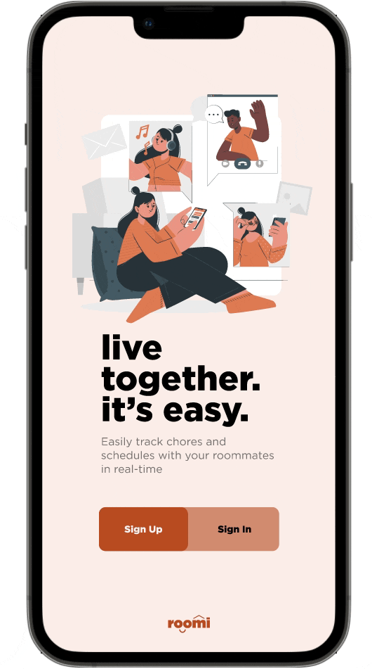

Background
For many young adults, college is the first experience when it comes to living with others. With different personalities, living styles, and preferences in the mix, living with others can be difficult to navigate when people don’t see eye to eye.
Project
Collaborative project for my ITP342 (Designing for User Experience course at the University of Southern California. Over the course of the project, we conducted extensive research, designed and prototyped, and presented to stakeholders.
My Role
Lead UX Researcher,
UX Designer
The Team
Sophia (UX Designer), Kirsten (UX Designer)
Tools
Figma, Qualtrics, User Interviews, User Personas, A/B Testing, Journey Map, Affinity Mapping, Prototyping, Usability Testing
For many young adults, college is the first experience when it comes to living with others. With different personalities, living styles, and preferences in the mix, living with others can be difficult to navigate when people don’t see eye to eye. How can we develop a platform that can alleviate the hard parts of living with others?
To pinpoint what specifically made living with others difficult, we carefully crafted 8 research questions to understand users’ living situation, living preferences, and conflict resolution tactics. We conducted 5 user interviews with college students between the ages of 18-22.
“It's not fair right now because not everyone is contributing with chores”
“I wish I had a set schedule of when to do chores rather than doing it whenever”
“I am a non confrontational person. It bothers me, but I rather do the chores than make it a big deal”
“I am very grateful that my roommates does most of chores, I do like 10%”
“I don’t think my roommate minds doing the chores”
“I tend to forget to pick up after myself, I do feel bad that my housemate usually cleans up after me."
Finding 1. The patterns
From all the qualitative interview responses we collected, we created an affinity map to categorize the answers into general statements. Based on the general categories that had the most related responses, we found 3 things that users wanted to improve their living situations: Communication, Accountability, and Equity.
Finding 2. The two types of roommates
From all the answers we collected, we found there were two types of roommates and some in between. We created 2 user personas to represent the target users of Roomi: Frustrated Frank and Lazy Lucy.
Walking in Frank's shoes
Frank is a USC student living in an off-campus apartment with 3 of his best friends. Frank realizes that his living style is different from his friends’ and is tired of reminding his friends to clean up after themselves. He's resorted to doing all the chores himself to avoid escalating the situation. Frank needs a way to effectively communicate what chores should be done while ensuring that his roommates are held accountable for their share of work.
Walking in Lucy's shoes
Lucy, a sophomore at NYU, is living with her friends in off-campus housing. This is her first time living alone so she does her best to remember her responsibilities, but often forgets to clean up after herself due to her busy schedule. As a result, she’s noticed that she’s grown distant from her housemates and they seem to regularly be upset with her. Lucy needs a better technique to remember what chores to complete, and thus maintain peace among her household.
User flows
Keeping the patterns and types of users in mind, we started drafting the user flows that would prioritize communication, accountability, and equity while serving our two target users.
Low fidelity wireframes
The user flows were transformed into low fidelity prototypes to encompass the experiences of both first-time users (Frank) and returning users (Lucy).
For first-time users, the journey begins with a sign-up screen and an onboarding survey to gather data on living styles. They are then directed to the dashboard, where they can initiate the creation of tasks that are then added to their to-do list and calendar.
To demonstrate the experience of returning users, such as Lucy, we introduced the nudge function, which serves as a reminder for users to complete their tasks through push notifications.
A Qualtrics survey consisting of 14 questions was developed to test the efficacy of our low fidelity wireframes, aiming to ascertain whether our screens effectively served the intended purpose for our users and identify any design gaps.
From 35 survey responses we found 3 key insights...
Establishing a design system
When brainstorming for a color scheme, we wanted to maintain the core values of our app (communication, accountability, and equity) while keeping the app fun and lively for the users. Shades of blue were chosen as our primary and secondary color because according to color psychology, blue is said to promote reliability, responsibility and calmness.
Elevating the experience
By incorporating the insights gathered from past user research and the Qualtrics survey as well as leveraging the established design system, the low fidelity wireframes underwent a transformative refinement process, resulting in the creation of high-fidelity wireframes.
Confrontation among roommates can be a daunting task. How can we foster an environment that promotes ease and comfort?
Based on user feedback from a critique session of 20+ participants, the blue color scheme was perceived as having a corporate and serious vibe. Users also expressed apprehension about the potential aggressiveness of the nudge function. The design objective was to create an app experience that felt engaging and enjoyable, devoid of any associations with chores or aggression.
The cursed dashboard
Throughout Roomi's journey, the dashboard posed a lot of problems for users. Users felt that certain interfaces on the dashboard were confusing and some were unnecessary. The dashboard is a really important part of Roomi so we wanted to make sure we got it right.
Orange is the new blue
Playing around with different color schemes and researching color psychology, we completely scrapped the previous color scheme.
According to color psychology, orange is optimistic and uplifting, rejuvenating our spirit. With the nudge function being a key feature of Roomi, we did not want to make living together feel like a chore. Incorporating a color that induces liveliness and positivity will make Roomi a fun but functional app for our users.
A/B testing
Each UX designer designed 3 distinctly different dashboards and asked users what they liked and didnt like. From this information, we combined the features that users liked into one dashboard.
First time user
Key Features
- Sign up
- Share with roommates
- Add rooms
- Create tasks
- View calendar overview of tasks

Returning user
Key Features
- Nudge function (first alert)
- Alert function (second alert)
- Clear tasks
1. Test early and consistently– Because we conducted user research early on and consistently throughout the project, I was able to be confident in my design decisions and it made the decision process go smoother.
2. Intentionality behind research questions – Taking the time to sit down and plan out thoughtful questions uncovered the most valuable insights that helped with design decisions.